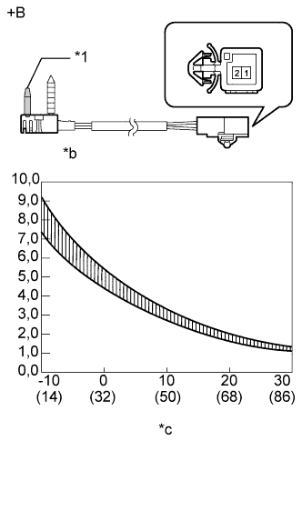

ПЕРЕДНИЙ ДАТЧИК ТЕМПЕРАТУРЫ ИСПАРИТЕЛЯ > ПРОВЕРКА |
| 1. ПРОВЕРЬТЕ ТЕРМИСТОР СИСТЕМЫ КОНДИЦИОНИРОВАНИЯ № 1 |
|  |
Измерьте сопротивление в соответствии со значениями, приведенными в таблице ниже.
| Контакты для подключения диагностического прибора | Условие | Заданные условия |
| 1 - 2 | -10°C (14°F) | 7,30 - 9,10 кОм |
| 1 - 2 | -5°C (23°F) | 5,65 - 6,95 кОм |
| 1 - 2 | 0°C (32°F) | 4,40 - 5,35 кОм |
| 1 - 2 | 5°C (41°F) | 3,40 - 4,15 кОм |
| 1 - 2 | 10°C (50°F) | 2,70-3,25 кОм |
| 1 - 2 | 15°C (59°F) | 2,14 - 2,58 кОм |
| 1 - 2 | 20°C (68°F) | 1,71 - 2,05 кОм |
| 1 - 2 | 25°C (77°F) | 1,38 - 1,64 кОм |
| 1 - 2 | 30°C (86°F) | 1,11 - 1,32 кОм |
| *1 | Датчик |
| *a | Устройство с отсоединенным жгутом проводов (термистор системы кондиционирования № 1) |
| *b | Сопротивление, кОм |
| *c | Температура, °C (°F) |